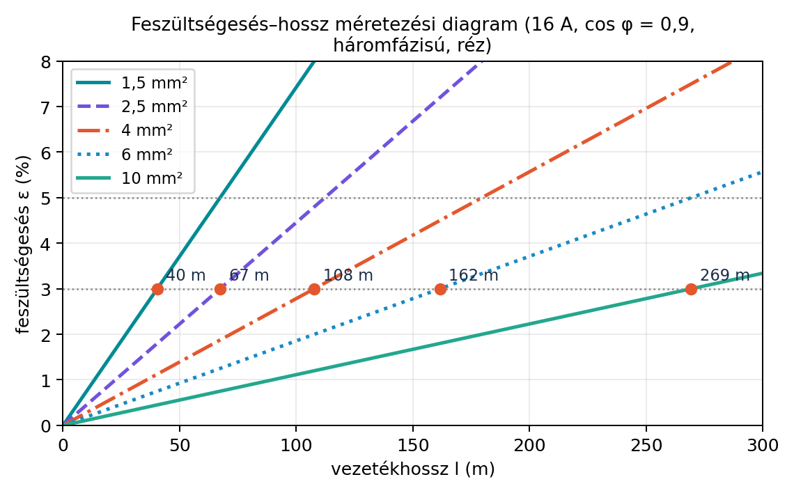

A kapcsolódó elmélet: tankönyv, 7.4 alfejezet.
Biztonsági korlát. A feladat tanműhelyi (törpefeszültségű) környezetre vagy jogosult oktató felügyeletére vonatkozik; hálózati feszültségen önállóan ne végezd.
Az öt biztonsági szabály minden csipeszfelhelyezés és csere előtt: 1. leválasztás minden oldalról; 2. visszakapcsolás elleni biztosítás (lakat, tábla); 3. a feszültségmentesség megállapítása kétpólusú vizsgálóval; 4. földelés és rövidre zárás, ahol előírt; 5. a közeli, feszültség alatti részek lefedése (részletesen (tankönyv, 2.4)).
Eszközök. Fázissorrend-mutató (legalább CAT III 600 V, ellenőrizendő: adatlap), kétpólusú feszültségvizsgáló, szigetelt csipeszek, jelölőcímkék, jegyzőkönyv; opcionálisan feszültségmentesen használható motorforgásirány-vizsgáló (a lekötött motor kapcsaira csatlakozik, a tengelyt kézzel forgatva jelzi az irányt).
Lépések.
Döntési táblázat: hol cseréljek két fázist?
| Kérdés / helyzet | A csere helye |
|---|---|
| több gép csatlakozik a betáplálásra, és a többi jó irányba forog | csak a hibás gép leágazásában (védő- vagy kapcsolókészülék kimenete) vagy a motor kapocsdobozában; a betáplálást nem bántjuk |
| új betáplálás, még nem csatlakozik gép | a betáplálás kapcsainál, hogy az elosztó jobbforgó legyen |
| hordozható gép CEE-dugóval | a gépnél (dugóban vagy kapocsdobozban); az aljzatot nem módosítjuk (a CEE-aljzatok jobbforgó bekötése a szokásos gyakorlat, ellenőrizendő: MSZ EN 60309 és üzemi előírás) |
Ha a betáplálás balforgó, és emiatt mind a többi, mind az új gép érintett, a hibát a betáplálásban, a teljes érintett kör ismételt forgásirány-ellenőrzésével kell javítani.
Jegyzőkönyv-minta (példaadat):
| Rovat | Bejegyzés |
|---|---|
| dátum, hely | 2026-03-12, „B” csarnok, +E3 elosztó, szivattyú leágazás |
| műszer | fázissorrend-mutató, azonosító: FS-02 |
| mért irány a betáplálásban | R (jobbforgó) |
| észlelt forgásirány | fordított |
| mit cseréltek, hol | L2↔︎L3, a motor kapocsdobozában |
| ellenőrző mérés és próba | forgásirány helyes |
| jelölés, aláírás | címke a kapocsdobozban; mérő aláírása |
Tipikus hibák. Egyetlen gép miatt a betáplálásban cserélnek, ezért a többi gép fordul vissza; a cserét nem jelölik; a próbaindítást csatlakoztatott, visszaforgásra érzékeny hajtott géppel végzik.
A motorbekötés gyakorlatában a Motor kapocsbekötése és beüzemelése (tankönyv, 41.1) alfejezet ugyanezt a forgásirány-ellenőrzést és csere-helyválasztást alkalmazza.
Adott: háromfázisú,
,
,
,
rézkábel,
,
.
Keresett: a feszültségesés
és a százalékos érték
.
Képlet:
Behelyettesítés:
A nevező:
,
a számláló:
.
Százalékban:
Ellenőrzés: a 25 m-es, 2,5 mm²-es kábelen 16 A terhelésnél a feszültségesés kicsi, kb. 1 %, ami egy fogyasztói áramkörre megfelelő. A nagyságrend reális.
Hosszabb kábelnél vagy nagyobb keresztmetszetnél a reaktanciát sem szabad elhanyagolni.
Adott: háromfázisú,
,
,
tehát
,
,
kábel hosszegységre eső ellenállása
,
reaktanciája
(ellenőrizendő: a kábel gyártói adatlapja szerint).
Keresett: a feszültségesés
és
.
Képlet:
Behelyettesítés:
Százalékban:
Ellenőrzés: A 100 A-es, 250 m hosszú kábelen a feszültségesés megközelíti a 4 %-ot. Ez világítási áramkörben már túl nagy lehet, motoros fogyasztónál pedig a kapocsfeszültség csökkenését jelzi. A számításból az is látszik, hogy a vezeték ellenállása , reaktanciája ; a feszültségesésben az mellett az tag kb. -ot ad, tehát a reaktancia nem elhanyagolható.
A gyakorlatban a kérdés legtöbbször fordítva hangzik el: mekkora hosszig elég egy adott keresztmetszet? Erre a következő méretezési diagram ad gyors választ. Egy rögzített terhelésre (háromfázisú kör, , , réz, , reaktancia nélkül, ) öt keresztmetszet egyenesét mutatja; a két vízszintes pontvonal a 3 %-os és az 5 %-os tipikus tervezési határ (ellenőrizendő: a pontos határok a Szabványi követelmény szakasz szerint).

A diagramról leolvasható, hogy 16 A-es háromfázisú körnél 2,5 mm²-rel kb. 67 m-ig marad a feszültségesés 3 % alatt. Az egyenesek meredeksége a keresztmetszettel fordítottan arányos: kétszeres keresztmetszet kétszeres határhosszt ad. A leolvasott határhosszak táblázatban:
| Keresztmetszet | 1,5 mm² | 2,5 mm² | 4 mm² | 6 mm² | 10 mm² |
|---|---|---|---|---|---|
| 3 %-ig () | 40 m | 67 m | 108 m | 162 m | 269 m |
| 5 %-ig () | 67 m | 112 m | 180 m | 269 m | 449 m |
Más áramnál a hosszak arányosan átszámolhatók (pl. 32 A-nél a felére csökkennek). Ezért hosszú kábelnél nem elég „vastagabb kábelt választani”: ki kell számolni (vagy le kell olvasni) a feszültségesést is.
Adott:
-os
ohmos fogyasztó (például átfolyós vízmelegítő, példaadat),
,
réz,
.
Keresett: a feszültségesés egy- és háromfázisú
bekötésnél.
Egyfázisú bekötés: ; , ez -ra vonatkoztatva .
Háromfázisú bekötés: ; , ez -ra vonatkoztatva .
A százalékos feszültségesés aránya kb. 6-szoros: harmadannyi az áram, nincs áram a nullavezetőben (nincs visszavezetési veszteség), és a nagyobb, -os alaphoz viszonyítunk. Megjegyzés: az egyfázisú a -es kábelt terhelhetőség szempontjából is túlterheli (ellenőrizendő: MSZ HD 60364-5-52), tehát ez a változat nem építhető meg.
Kitekintés a nyomatékra. Aszinkron motornál . Az 5. feladat -os indítási feszültségesése az indítónyomatékot -szorosra csökkenti: kb. -kal kisebb nyomatékkal egy nehézindítású gép el sem indul. ∎
1. Igaz vagy hamis? A pozitív fázissorrend mindig
azt jelenti, hogy az
fázis feszültsége a legnagyobb.
2. Melyik két fázist kell felcserélni ahhoz, hogy a
háromfázisú motor forgásiránya megforduljon?
3. Egy háromfázisú, 25 m hosszú, 2,5 mm²-es rézkábelen
16 A folyik,
.
Mekkora a feszültségesés közelítőleg?
4. Miért nő a feszültségesés, ha a terhelés
teljesítménytényezője csökken – azonos hatásos teljesítmény
mellett?
5. Mi a fázissorrend-mutató szerepe, és miért kell
előtte vizsgálni a műszer CAT besorolását?
6. Melyik képlet adja a háromfázisú feszültségesést, ha
a reaktancia elhanyagolható?
7. Az RC-csillag elvű fázissorrend-jelzőben a
kondenzátor az
-re,
a H1 lámpa az
-re,
a H2 az
-ra
csatlakozik. Melyik lámpa világít erősebben, ha a hálózat sorrendje
––?
8.
-os
feszültségesésnél kb. hány százalékkal csökken az aszinkron motor
indítónyomatéka?
A válaszok a szakasz végén, a Feladatok után találhatók.
1. feladat (A)
Rajzolja le a három fázisfeszültség fázorait, és írja fel az
időfüggvényeket
,
mellett, pozitív fázissorrendben.
2. feladat (A)
Egy háromfázisú motor forgásiránya rossz. Melyik két fázis cseréjét
javasolja? Magyarázza el, miért elegendő két fázist cserélni, és mi
történik a forgó mezővel.
3. feladat (B)
Egy háromfázisú kábelt
,
,
,
,
réz,
adatokkal terhelünk. A reaktanciát hanyagoljuk el. Számítsa ki a
feszültségesést voltban és százalékban.
4. feladat (B)
Egy hosszú, 200 m-es, 50 mm²-es rézkábelen
,
.
A kábel hosszegységre eső ellenállása
(),
reaktanciája
.
Számítsa ki a feszültségesést. Hasonlítsa össze azzal az esettel, amikor
a reaktanciát elhanyagoljuk.
5. feladat (C)
Egy szivattyúmotor 80 m-re van az elosztótól. A motor névleges árama 22
A, indítási árama a névleges hatszorosa, indításkor cosφ ≈ 0,5
(induktív), a kábel 2,5 mm²-es réz. Indításkor a feszültségesés
meghaladhatja-e a 10 %-ot? Számoljon az egyszerű, ellenállásos
képlettel, és értelmezze az eredményt. Ezután javasoljon megoldást a
feszültségesés csökkentésére.
6. feladat (D)
Egy háromfázisú, feszültség alatt álló elosztóban fázissorrend-mutatóval
azt mérik, hogy a forgó mező
irányú. A mérést jogosult személy végzi. A szivattyúmotor a jelenlegi
bekötésben rossz irányba forog. Melyik két fázist cseréli meg, és hogyan
ellenőrzi a cserét? A munkát természetesen feszültségmentesítés után
végezze.
7. feladat (B)
Leolvasással, a méretezési diagram vagy a határhossz-táblázat alapján:
mekkora keresztmetszet kell egy 120 m hosszú, 16 A-es
()
háromfázisú körhöz, ha a feszültségesés legfeljebb 3 % lehet?
1. válasz. Hamis. A fázissorrend a fázisok időbeli sorrendjét jelenti, nem azt, hogy melyik feszültsége nagyobb. A három feszültség pillanatértéke folyamatosan változik; a csúcsok sorrendje a lényeg.
2. válasz. Bármely két fázist, pl. -t és -at, fel kell cserélni. Ekkor a fázorok sorrendje megfordul, és a forgó mező iránya is megfordul.
3. válasz. , azaz kb. 1,11 %.
4. válasz. Azonos hatásos teljesítményhez kisebb teljesítménytényező mellett nagyobb áram kell: . Ezért nő. Azonos áram mellett viszont kis keresztmetszetnél a feszültségesés kisebb lesz (); nagy keresztmetszetű, induktív reaktanciájú kábelnél az tag miatt nőhet.
5. válasz. A fázissorrend-mutató a három fázis bekötése után jelzi a forgó mező irányát. A CAT besorolás azt mutatja, mekkora hálózati túlfeszültségnek állhat ellen a műszer mérés közben. Alacsony CAT besorolású műszer elosztóban életveszélyes lehet.
6. válasz. .
7. válasz. A H2, vagyis az -ra kötött lámpa: –– sorrendben a kondenzátoros -et az követi, és a szabály szerint a kondenzátor után következő fázis jelzője erős (a két lámpa feszültsége helyet cserél: H2-n kb. , H1-en kb. ).
8. válasz. Kb. -kal: , és .
1. feladat megoldása.
Az időfüggvények:
A fázorábra a fenti fázorábrának felel meg: az fázor vízszintes, az 120°-kal az óramutató járásával megegyezően (−120°), az 240°-kal (−240° = +120°) elforgatva, azonos hosszúságú. Az időfüggvényekben a csúcsok sorrendje: , majd , majd .
2. feladat megoldása.
Két fázist, például
és
felcserélünk. Ekkor a fázorok sorrendje
lesz, ami a forgó mező forgásirányát megfordítja. Több fázist nem kell
cserélni, mert a fázissorrend megfordításához elég két fázis helyet
cseréljen. A motor forgásiránya a fázissorrendtől függ, ezért ugyanaz a
motor ellenkező irányba forog.
3. feladat megoldása.
Adott:
,
,
,
,
.
Képlet:
Behelyettesítés:
A nevező:
,
a számláló:
.
Százalékban:
Ez a 3–5 %-os sávban van, motoros fogyasztónál általában elfogadható, de világításnál már határeset.
4. feladat megoldása.
Adott:
,
,
,
,
,
.
Képlet:
Behelyettesítés:
Ha a reaktanciát elhanyagoljuk:
A különbség kb. 0,83 V (a a kb. -a). Ekkora keresztmetszetnél a reaktancia már mérhető hatású; kis keresztmetszetnél (pl. , ) az ellenállás uralkodik, és a reaktancia hatása elhanyagolható. A 50 A terhelhetőségét külön kell ellenőrizni (ellenőrizendő: MSZ HD 60364-5-52 táblázat).
5. feladat megoldása.
Adott:
,
,
,
,
,
.
Az egyszerű képlet az indítási árammal:
Százalékban:
Ez meghaladja a -ot. Lehetséges beavatkozások: nagyobb keresztmetszet (-rel , ), lágyindító vagy csillag–delta indítás (az indítási áram kb. harmadára csökken: -en ), a motor közelebbi csatlakoztatása. Ezen felül az üzemi feszültségesést is ellenőrizni kell (, esetén , ), és a a -es kábel terhelhetőségi szempontból határeset (ellenőrizendő: MSZ HD 60364-5-52).
6. feladat megoldása.
A mért
sorrend negatív. Ha a motor jelenleg rossz irányba forog, akkor a mért
negatív sorrendet kell pozitívra cserélni. Ehhez ismét két fázist
cserélünk, például
-at
és
-t.
A munkát feszültségmentesítés után végezzük: lekapcsolás,
visszakapcsolás elleni biztosítás, feszültségmentesség ellenőrzése,
földelés és rövidre zárás, ha szükséges, szomszédos részek lefedése. A
csere után a motor beindul, és a forgásirányt ellenőrizzük – vagy
fázissorrend-mutatóval, vagy a motor forgásirányának
szemrevételezésével. A csere helye: ha az elosztóról
táplált többi háromfázisú fogyasztó jó irányba forog (ehhez a sorrendhez
van bekötve), csak a szivattyú leágazásában vagy a motor kapocsdobozában
cserélünk, és a cserét jelöljük; az elosztó betáplálásában csak akkor,
ha az érintett kör egésze hibás (például új betáplálás), és utána minden
gép forgásirányát újra ellenőrizzük.
7. feladat megoldása.
A 3 %-os vonal és a 120 m-es függőleges metszéspontja a 4 mm²-es és a 6
mm²-es egyenes között van: a 4 mm² csak 108 m-ig elég, ezért 6
mm² kell (határhossza 162 m). Számítással:
,
;
4 mm²-rel
,
– túl sok.